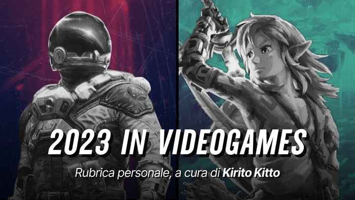

Year in Videogames 2023
Benvenuti nella terza edizione della rubrica Year in Videogames, un recap annuale dei titoli giocati nel corso dell’anno per ricordare i punti più alti (e bassi) della mia carriera videoludica.

Game of the Year Award: titoli con una qualità realizzativa eccellente o il cui viaggio in loro compagnia è stato memorabile.
- Tears of the Kingdom
- The Last of Us
Great Experience Award: titoli che non hanno vinto il premio “Game of the Year” ma che ritengo memorabili per qualità realizzative o impatto emotivo.
- Outward
- Starfield
- Jusant
- Resident Evil 4
- AI The Somnium Files
- Super Mario Bros Wonder
- Spider Man Miles Morales
- Mars First Logistic
- Chants of Sennaar
Soundtrack Award: titoli con una colonna sonora nel complesso eccellente, con diverse OST memorabili.
- Jusant
- Xenoblade Future Redeemed
Music Memory Award: titoli che non hanno vinto il “Soundtrack Award” ma presentano una o più OST memorabili.
- Outward
- Ace Combat 7
- AI The Somnium Files
- Tears of the Kingdom
Above Expectation: titoli che mi hanno divertito molto più del previsto.
- AI The Somnium Files
- Lil Gator Game
- Grow Home
- Griefhelm
Below Expectation: titoli che non hanno raggiunto le mie aspettative, forse ingiustamente troppo alte.
- Monster Hunter World
- Armored Core VI
- A Highland Song
- Rollerdrome
- Inside
- Tchia
Bad Optimization: titoli con una realizzazione tecnica che ha rovinato l’esperienza.
- The Last of Us
- A Highland Song
- Baldur’s Gate 3
Multiplayer Award
- RL: SideSwipe
- HaxBall
Moment Memory Award: titoli che non hanno vinto il premio “Core Memory Award” o “Great Game Award” ma che presentano una scena o una meccanica particolarmente memorabile.
- Little Nightmares
- Little Nightmares II
- Before your Eyes
- Bramble: The Mountain King
Honorable Mention: titoli che non sono riusciti a vincere un premio, comunque meritevoli di una mezione.
Tripla A
- Resident Evil 3
- Resident Evil 2
- Lies of P
- Returnal
- Super Mario Bros
- Super Mario Bros 3
- Uncharted The Lost Legacy
Indie
- Viewfinder
- Only Up
- En Garde!
- Grow Up
- Bright Memory: Infinite
- The Beginner’s Guide
Titoli che non ho finito e con valutazione rimandata: Mario + Rabbids: Sparks of Hope, Baldur’s Gate 3, Atomic Heart, Thymesia.
Altri titoli che ho giocato ma che non hanno vinto un premio: Tunic, Venba, F-Zero, Trek to Yomi, Vampire Survivors, Abriss Build to Destroy, Word Factori, Superflight, BackfireWall, Blind Drive, Card Shark, Hi-Fi Rush.